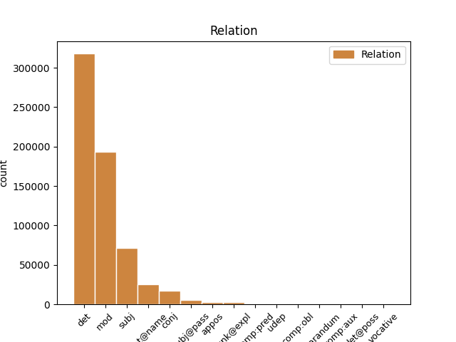
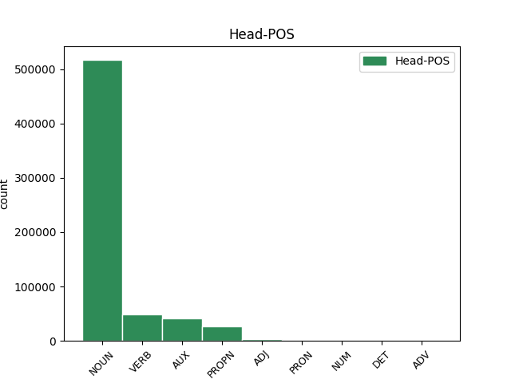
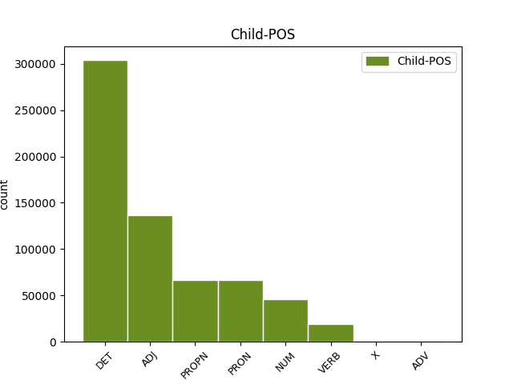

Distribution of features within this leaf



Agreement Rules sorted by frequency.
- When the dependent token is the determiner(det) of the head token, and the dependent token is DET.
1 Iomega _ _ _ _ 0 _ _ _
2 , _ _ _ _ 0 _ _ _
3 Spezialist _ _ _ _ 0 _ _ _
4 für _ _ _ _ 0 _ _ _
5 Speicherlösungen _ _ _ _ 0 _ _ _
6 , _ _ _ _ 0 _ _ _
7 liefert _ _ _ _ 0 _ _ _
8 nun _ _ _ _ 0 _ _ _
9 seinen _ _ _ _ 0 _ _ _
10 portablen _ _ _ _ 0 _ _ _
11 CD-RW-Brenner _ _ _ _ 0 _ _ _
12 Predator _ _ _ _ 0 _ _ _
13 in _ _ _ _ 0 _ _ _
14 den den DET ART Case=Dat|Number=Plur|PronType=Art 15 det _ _
15 USA USA PROPN NE Number=Plur|Person=3 0 _ _ _
16 aus _ _ _ _ 0 _ _ _
17 . _ _ _ _ 0 _ _ _
1 Iomega _ _ _ _ 0 _ _ _
2 , _ _ _ _ 0 _ _ _
3 Spezialist _ _ _ _ 0 _ _ _
4 für _ _ _ _ 0 _ _ _
5 Speicherlösungen _ _ _ _ 0 _ _ _
6 , _ _ _ _ 0 _ _ _
7 liefert _ _ _ _ 0 _ _ _
8 nun _ _ _ _ 0 _ _ _
9 seinen _ _ _ _ 0 _ _ _
10 portablen portabel ADJ ADJA Case=Acc|Degree=Pos|Gender=Masc|Number=Sing 11 mod _ _
11 CD-RW-Brenner Brenner NOUN NN Gender=Masc|Number=Sing|Person=3 0 _ _ _
12 Predator _ _ _ _ 0 _ _ _
13 in _ _ _ _ 0 _ _ _
14 den _ _ _ _ 0 _ _ _
15 USA _ _ _ _ 0 _ _ _
16 aus _ _ _ _ 0 _ _ _
17 . _ _ _ _ 0 _ _ _
1 Hier _ _ _ _ 0 _ _ _
2 erfreue erfreuen VERB VVFIN Mood=Ind|Number=Sing|Person=3|Tense=Pres|VerbForm=Fin 0 _ _ _
3 man man PRON PIS Case=Nom|Number=Sing|Person=3|PronType=Ind,Neg,Tot 2 subj _ _
4 sich _ _ _ _ 0 _ _ _
5 noch _ _ _ _ 0 _ _ _
6 immer _ _ _ _ 0 _ _ _
7 ungebremster _ _ _ _ 0 _ _ _
8 Nachfrage _ _ _ _ 0 _ _ _
9 , _ _ _ _ 0 _ _ _
10 meinte _ _ _ _ 0 _ _ _
11 der _ _ _ _ 0 _ _ _
12 Philips-Sprecher _ _ _ _ 0 _ _ _
13 Hans _ _ _ _ 0 _ _ _
14 Driessen _ _ _ _ 0 _ _ _
15 . _ _ _ _ 0 _ _ _
1 Analysten _ _ _ _ 0 _ _ _
2 warnen _ _ _ _ 0 _ _ _
3 dagegen _ _ _ _ 0 _ _ _
4 , _ _ _ _ 0 _ _ _
5 dass _ _ _ _ 0 _ _ _
6 der _ _ _ _ 0 _ _ _
7 Umsatz _ _ _ _ 0 _ _ _
8 der _ _ _ _ 0 _ _ _
9 Firma _ _ _ _ 0 _ _ _
10 durch _ _ _ _ 0 _ _ _
11 die _ _ _ _ 0 _ _ _
12 Auftragsstornierungen _ _ _ _ 0 _ _ _
13 um _ _ _ _ 0 _ _ _
14 etwa _ _ _ _ 0 _ _ _
15 19 19 NUM CARD Number=Plur|NumType=Card|Person=3 16 mod _ _
16 Prozent Prozent NOUN NN Gender=Neut|Number=Plur|Person=3 0 _ _ _
17 sinken _ _ _ _ 0 _ _ _
18 werde _ _ _ _ 0 _ _ _
19 . _ _ _ _ 0 _ _ _
1 Iomega Iomega PROPN NE Case=Nom|Number=Sing|Person=3 7 subj _ _
2 , _ _ _ _ 0 _ _ _
3 Spezialist _ _ _ _ 0 _ _ _
4 für _ _ _ _ 0 _ _ _
5 Speicherlösungen _ _ _ _ 0 _ _ _
6 , _ _ _ _ 0 _ _ _
7 liefert liefern VERB VVFIN Mood=Ind|Number=Sing|Person=3|Tense=Pres|VerbForm=Fin 0 _ _ _
8 nun _ _ _ _ 0 _ _ _
9 seinen _ _ _ _ 0 _ _ _
10 portablen _ _ _ _ 0 _ _ _
11 CD-RW-Brenner _ _ _ _ 0 _ _ _
12 Predator _ _ _ _ 0 _ _ _
13 in _ _ _ _ 0 _ _ _
14 den _ _ _ _ 0 _ _ _
15 USA _ _ _ _ 0 _ _ _
16 aus _ _ _ _ 0 _ _ _
17 . _ _ _ _ 0 _ _ _
1 Vizepräsidentin Präsidentin NOUN NN Gender=Fem|Number=Sing|Person=3 0 _ _ _
2 Judy Judy PROPN NE Gender=Fem|Number=Sing|Person=3 1 flat@name _ _
3 Qua _ _ _ _ 0 _ _ _
4 erklärte _ _ _ _ 0 _ _ _
5 , _ _ _ _ 0 _ _ _
6 der _ _ _ _ 0 _ _ _
7 Gewinn _ _ _ _ 0 _ _ _
8 des _ _ _ _ 0 _ _ _
9 Unternehmens _ _ _ _ 0 _ _ _
10 werde _ _ _ _ 0 _ _ _
11 durch _ _ _ _ 0 _ _ _
12 die _ _ _ _ 0 _ _ _
13 Reduzierung _ _ _ _ 0 _ _ _
14 nicht _ _ _ _ 0 _ _ _
15 negativ _ _ _ _ 0 _ _ _
16 beeinflusst _ _ _ _ 0 _ _ _
17 . _ _ _ _ 0 _ _ _
1 Iomega _ _ _ _ 0 _ _ _
2 , _ _ _ _ 0 _ _ _
3 Spezialist _ _ _ _ 0 _ _ _
4 für _ _ _ _ 0 _ _ _
5 Speicherlösungen _ _ _ _ 0 _ _ _
6 , _ _ _ _ 0 _ _ _
7 liefert _ _ _ _ 0 _ _ _
8 nun _ _ _ _ 0 _ _ _
9 seinen sein PRON PPOSAT Case=Acc|Gender=Masc|Number=Sing|Person=3|Poss=Yes|PronType=Prs 11 det _ _
10 portablen _ _ _ _ 0 _ _ _
11 CD-RW-Brenner Brenner NOUN NN Gender=Masc|Number=Sing|Person=3 0 _ _ _
12 Predator _ _ _ _ 0 _ _ _
13 in _ _ _ _ 0 _ _ _
14 den _ _ _ _ 0 _ _ _
15 USA _ _ _ _ 0 _ _ _
16 aus _ _ _ _ 0 _ _ _
17 . _ _ _ _ 0 _ _ _
1 Kaum _ _ _ _ 0 _ _ _
2 ein _ _ _ _ 0 _ _ _
3 Hersteller Hersteller NOUN NN Gender=Masc|Number=Sing|Person=3 0 _ _ _
4 , _ _ _ _ 0 _ _ _
5 der _ _ _ _ 0 _ _ _
6 nicht _ _ _ _ 0 _ _ _
7 in _ _ _ _ 0 _ _ _
8 das _ _ _ _ 0 _ _ _
9 allgemeine _ _ _ _ 0 _ _ _
10 Klagen _ _ _ _ 0 _ _ _
11 über _ _ _ _ 0 _ _ _
12 die _ _ _ _ 0 _ _ _
13 schlechten _ _ _ _ 0 _ _ _
14 Verkaufszahlen _ _ _ _ 0 _ _ _
15 einstimmt einstimmen VERB VVFIN Mood=Ind|Number=Sing|Person=3|Tense=Pres|VerbForm=Fin 3 mod _ _
16 . _ _ _ _ 0 _ _ _
1 Der _ _ _ _ 0 _ _ _
2 Pilz _ _ _ _ 0 _ _ _
3 der _ _ _ _ 0 _ _ _
4 Art _ _ _ _ 0 _ _ _
5 Geotrichum _ _ _ _ 0 _ _ _
6 ernähre ernähren VERB VVFIN Mood=Ind|Number=Sing|Person=3|Tense=Pres|VerbForm=Fin 0 _ _ _
7 sich _ _ _ _ 0 _ _ _
8 vom _ _ _ _ 0 _ _ _
9 im _ _ _ _ 0 _ _ _
10 Polycarbonat _ _ _ _ 0 _ _ _
11 enthaltenen _ _ _ _ 0 _ _ _
12 Kohlen- _ _ _ _ 0 _ _ _
13 und _ _ _ _ 0 _ _ _
14 Stickstoff _ _ _ _ 0 _ _ _
15 und _ _ _ _ 0 _ _ _
16 zersetze zersetzen VERB VVFIN Mood=Ind|Number=Sing|Person=3|Tense=Pres|VerbForm=Fin 6 conj _ _
17 so _ _ _ _ 0 _ _ _
18 den _ _ _ _ 0 _ _ _
19 durchsichtigen _ _ _ _ 0 _ _ _
20 Kunststoff _ _ _ _ 0 _ _ _
21 . _ _ _ _ 0 _ _ _
1 Nach _ _ _ _ 0 _ _ _
2 den _ _ _ _ 0 _ _ _
3 Großen _ _ _ _ 0 _ _ _
4 der _ _ _ _ 0 _ _ _
5 Branche _ _ _ _ 0 _ _ _
6 wie _ _ _ _ 0 _ _ _
7 Intel _ _ _ _ 0 _ _ _
8 , _ _ _ _ 0 _ _ _
9 AMD AMD PROPN NE Gender=Fem|Number=Sing|Person=3 0 _ _ _
10 oder _ _ _ _ 0 _ _ _
11 Apple Apple PROPN NE Case=Dat|Number=Sing|Person=3 9 conj _ _
12 gesellt _ _ _ _ 0 _ _ _
13 sich _ _ _ _ 0 _ _ _
14 nun _ _ _ _ 0 _ _ _
15 auch _ _ _ _ 0 _ _ _
16 der _ _ _ _ 0 _ _ _
17 erste _ _ _ _ 0 _ _ _
18 Komponenten-Hersteller _ _ _ _ 0 _ _ _
19 zu _ _ _ _ 0 _ _ _
20 dieser _ _ _ _ 0 _ _ _
21 Runde _ _ _ _ 0 _ _ _
22 . _ _ _ _ 0 _ _ _
1 Abgerundet _ _ _ _ 0 _ _ _
2 wird _ _ _ _ 0 _ _ _
3 die _ _ _ _ 0 _ _ _
4 Palette _ _ _ _ 0 _ _ _
5 durch _ _ _ _ 0 _ _ _
6 einen _ _ _ _ 0 _ _ _
7 4-Port-USB-Hub _ _ _ _ 0 _ _ _
8 , _ _ _ _ 0 _ _ _
9 der der PRON PRELS Case=Nom|Gender=Masc|Number=Sing|Person=3|PronType=Rel 18 subj@pass _ _
10 ebenfalls _ _ _ _ 0 _ _ _
11 für _ _ _ _ 0 _ _ _
12 die _ _ _ _ 0 _ _ _
13 neue _ _ _ _ 0 _ _ _
14 Version _ _ _ _ 0 _ _ _
15 des _ _ _ _ 0 _ _ _
16 Standards _ _ _ _ 0 _ _ _
17 vorbereitet _ _ _ _ 0 _ _ _
18 ist sein AUX VAFIN Mood=Ind|Number=Sing|Person=3|Tense=Pres|VerbForm=Fin 0 _ _ _
19 . _ _ _ _ 0 _ _ _
1 Version _ _ _ _ 0 _ _ _
2 2.0 _ _ _ _ 0 _ _ _
3 überholt _ _ _ _ 0 _ _ _
4 dann _ _ _ _ 0 _ _ _
5 mit _ _ _ _ 0 _ _ _
6 angepeilten _ _ _ _ 0 _ _ _
7 480 _ _ _ _ 0 _ _ _
8 MBit _ _ _ _ 0 _ _ _
9 pro _ _ _ _ 0 _ _ _
10 Sekunde _ _ _ _ 0 _ _ _
11 sogar _ _ _ _ 0 _ _ _
12 Apples Apples PROPN NE Case=Gen|Number=Sing|Person=3 13 mod _ _
13 FireWire-Standard Standard NOUN NN Gender=Masc|Number=Sing|Person=3 0 _ _ _
14 ( _ _ _ _ 0 _ _ _
15 alias _ _ _ _ 0 _ _ _
16 IEEE _ _ _ _ 0 _ _ _
17 1394 _ _ _ _ 0 _ _ _
18 ) _ _ _ _ 0 _ _ _
19 - _ _ _ _ 0 _ _ _
20 Insider _ _ _ _ 0 _ _ _
21 vermuten _ _ _ _ 0 _ _ _
22 , _ _ _ _ 0 _ _ _
23 dass _ _ _ _ 0 _ _ _
24 der _ _ _ _ 0 _ _ _
25 Computerlieferant _ _ _ _ 0 _ _ _
26 aus _ _ _ _ 0 _ _ _
27 Cupertino _ _ _ _ 0 _ _ _
28 deshalb _ _ _ _ 0 _ _ _
29 noch _ _ _ _ 0 _ _ _
30 keine _ _ _ _ 0 _ _ _
31 eigenen _ _ _ _ 0 _ _ _
32 Pläne _ _ _ _ 0 _ _ _
33 zur _ _ _ _ 0 _ _ _
34 Unterstützung _ _ _ _ 0 _ _ _
35 des _ _ _ _ 0 _ _ _
36 USB-2.0-Standards _ _ _ _ 0 _ _ _
37 bekannt _ _ _ _ 0 _ _ _
38 gegeben _ _ _ _ 0 _ _ _
39 hat _ _ _ _ 0 _ _ _
40 . _ _ _ _ 0 _ _ _
1 Im _ _ _ _ 0 _ _ _
2 Zeitalter _ _ _ _ 0 _ _ _
3 der _ _ _ _ 0 _ _ _
4 Informationsgesellschaft _ _ _ _ 0 _ _ _
5 sei sein AUX VAFIN Mood=Ind|Number=Sing|Person=3|Tense=Pres|VerbForm=Fin 0 _ _ _
6 es es PRON PPER Case=Nom|Gender=Neut|Number=Sing|Person=3|PronType=Prs 5 unk@expl _ _
7 notwendig _ _ _ _ 0 _ _ _
8 , _ _ _ _ 0 _ _ _
9 moderne _ _ _ _ 0 _ _ _
10 steuerrechtliche _ _ _ _ 0 _ _ _
11 Rahmenbedingungen _ _ _ _ 0 _ _ _
12 zu _ _ _ _ 0 _ _ _
13 schaffen _ _ _ _ 0 _ _ _
14 , _ _ _ _ 0 _ _ _
15 erklärte _ _ _ _ 0 _ _ _
16 Tauss _ _ _ _ 0 _ _ _
17 . _ _ _ _ 0 _ _ _
1 Apples _ _ _ _ 0 _ _ _
2 Consumer-Notebook _ _ _ _ 0 _ _ _
3 ist _ _ _ _ 0 _ _ _
4 nun _ _ _ _ 0 _ _ _
5 in _ _ _ _ 0 _ _ _
6 den _ _ _ _ 0 _ _ _
7 Farben _ _ _ _ 0 _ _ _
8 Indigo _ _ _ _ 0 _ _ _
9 ( _ _ _ _ 0 _ _ _
10 Blau _ _ _ _ 0 _ _ _
11 ) _ _ _ _ 0 _ _ _
12 , _ _ _ _ 0 _ _ _
13 Key _ _ _ _ 0 _ _ _
14 Lime _ _ _ _ 0 _ _ _
15 ( _ _ _ _ 0 _ _ _
16 Giftgrün _ _ _ _ 0 _ _ _
17 ) _ _ _ _ 0 _ _ _
18 und _ _ _ _ 0 _ _ _
19 Graphite Graphit NOUN NN Case=Dat|Gender=Masc|Number=Sing|Person=3 0 _ _ _
20 ( _ _ _ _ 0 _ _ _
21 Grau Grau PROPN NE Number=Sing|Person=3 19 appos _ _
22 ) _ _ _ _ 0 _ _ _
23 zu _ _ _ _ 0 _ _ _
24 haben _ _ _ _ 0 _ _ _
25 und _ _ _ _ 0 _ _ _
26 wurde _ _ _ _ 0 _ _ _
27 um _ _ _ _ 0 _ _ _
28 einen _ _ _ _ 0 _ _ _
29 FireWire-Anschluss _ _ _ _ 0 _ _ _
30 sowie _ _ _ _ 0 _ _ _
31 einen _ _ _ _ 0 _ _ _
32 Composite-Video-Ausgang _ _ _ _ 0 _ _ _
33 erweitert _ _ _ _ 0 _ _ _
34 . _ _ _ _ 0 _ _ _
1 Auf _ _ _ _ 0 _ _ _
2 der _ _ _ _ 0 _ _ _
3 Web-Site _ _ _ _ 0 _ _ _
4 des _ _ _ _ 0 _ _ _
5 noch _ _ _ _ 0 _ _ _
6 nicht _ _ _ _ 0 _ _ _
7 benannten _ _ _ _ 0 _ _ _
8 Unternehmens _ _ _ _ 0 _ _ _
9 soll _ _ _ _ 0 _ _ _
10 der _ _ _ _ 0 _ _ _
11 Surfer _ _ _ _ 0 _ _ _
12 Angebote _ _ _ _ 0 _ _ _
13 vergleichen _ _ _ _ 0 _ _ _
14 und _ _ _ _ 0 _ _ _
15 so _ _ _ _ 0 _ _ _
16 den _ _ _ _ 0 _ _ _
17 schnellsten schnell ADJ ADJA Case=Acc|Degree=Sup|Gender=Masc|Number=Sing 0 _ _ _
18 oder _ _ _ _ 0 _ _ _
19 günstigsten günstig ADJ ADJA Case=Acc|Degree=Sup|Gender=Masc|Number=Sing 17 conj _ _
20 Flug _ _ _ _ 0 _ _ _
21 auswählen _ _ _ _ 0 _ _ _
22 können _ _ _ _ 0 _ _ _
23 . _ _ _ _ 0 _ _ _
1 Ford Ford PROPN NE Case=Nom|Number=Sing|Person=3 2 subj@pass _ _
2 sollte sollen AUX VMFIN Mood=Ind|Number=Sing|Person=3|Tense=Pres|VerbForm=Fin|VerbType=Mod 0 _ _ _
3 deswegen _ _ _ _ 0 _ _ _
4 nicht _ _ _ _ 0 _ _ _
5 noch _ _ _ _ 0 _ _ _
6 zusätzlich _ _ _ _ 0 _ _ _
7 zur _ _ _ _ 0 _ _ _
8 Kasse _ _ _ _ 0 _ _ _
9 gebeten _ _ _ _ 0 _ _ _
10 werden _ _ _ _ 0 _ _ _
11 , _ _ _ _ 0 _ _ _
12 forderte _ _ _ _ 0 _ _ _
13 Tauss _ _ _ _ 0 _ _ _
14 . _ _ _ _ 0 _ _ _
1 Wann _ _ _ _ 0 _ _ _
2 aus _ _ _ _ 0 _ _ _
3 den _ _ _ _ 0 _ _ _
4 Forschungen _ _ _ _ 0 _ _ _
5 ein _ _ _ _ 0 _ _ _
6 marktreifes _ _ _ _ 0 _ _ _
7 Produkt _ _ _ _ 0 _ _ _
8 entstehe entstehen VERB VVFIN Mood=Ind|Number=Sing|Person=3|Tense=Pres|VerbForm=Fin 10 subj _ _
9 , _ _ _ _ 0 _ _ _
10 ist sein AUX VAFIN Mood=Ind|Number=Sing|Person=3|Tense=Pres|VerbForm=Fin 0 _ _ _
11 laut _ _ _ _ 0 _ _ _
12 der _ _ _ _ 0 _ _ _
13 Physikerin _ _ _ _ 0 _ _ _
14 schwer _ _ _ _ 0 _ _ _
15 einzuschätzen _ _ _ _ 0 _ _ _
16 . _ _ _ _ 0 _ _ _
1 Es _ _ _ _ 0 _ _ _
2 soll _ _ _ _ 0 _ _ _
3 9,1 _ _ _ _ 0 _ _ _
4 GByte _ _ _ _ 0 _ _ _
5 auf _ _ _ _ 0 _ _ _
6 einem _ _ _ _ 0 _ _ _
7 5.25-Zoll-Medium _ _ _ _ 0 _ _ _
8 speichern _ _ _ _ 0 _ _ _
9 - _ _ _ _ 0 _ _ _
10 das _ _ _ _ 0 _ _ _
11 ist sein AUX VAFIN Mood=Ind|Number=Sing|Person=3|Tense=Pres|VerbForm=Fin 0 _ _ _
12 fast _ _ _ _ 0 _ _ _
13 doppelt _ _ _ _ 0 _ _ _
14 so _ _ _ _ 0 _ _ _
15 viel viel PRON PIS Degree=Pos|Number=Sing|Person=3|PronType=Ind,Neg,Tot 11 comp:pred _ _
16 wie _ _ _ _ 0 _ _ _
17 beim _ _ _ _ 0 _ _ _
18 Vorgängermodell _ _ _ _ 0 _ _ _
19 . _ _ _ _ 0 _ _ _
1 Kapazitäten _ _ _ _ 0 _ _ _
2 von _ _ _ _ 0 _ _ _
3 20 _ _ _ _ 0 _ _ _
4 , _ _ _ _ 0 _ _ _
5 40 40 NUM CARD Number=Plur|NumType=Card|Person=3 0 _ _ _
6 , _ _ _ _ 0 _ _ _
7 60 60 NUM CARD Number=Plur|NumType=Card|Person=3 5 conj _ _
8 und _ _ _ _ 0 _ _ _
9 80 _ _ _ _ 0 _ _ _
10 GByte _ _ _ _ 0 _ _ _
11 sind _ _ _ _ 0 _ _ _
12 momentan _ _ _ _ 0 _ _ _
13 angekündigt _ _ _ _ 0 _ _ _
14 ; _ _ _ _ 0 _ _ _
15 höhere _ _ _ _ 0 _ _ _
16 Kapazitäten _ _ _ _ 0 _ _ _
17 seien _ _ _ _ 0 _ _ _
18 zwar _ _ _ _ 0 _ _ _
19 möglich _ _ _ _ 0 _ _ _
20 , _ _ _ _ 0 _ _ _
21 aber _ _ _ _ 0 _ _ _
22 zurzeit _ _ _ _ 0 _ _ _
23 aufgrund _ _ _ _ 0 _ _ _
24 mangelnder _ _ _ _ 0 _ _ _
25 Nachfrage _ _ _ _ 0 _ _ _
26 noch _ _ _ _ 0 _ _ _
27 nicht _ _ _ _ 0 _ _ _
28 geplant _ _ _ _ 0 _ _ _
29 . _ _ _ _ 0 _ _ _
1 Bei _ _ _ _ 0 _ _ _
2 dem _ _ _ _ 0 _ _ _
3 Unglück _ _ _ _ 0 _ _ _
4 wurden _ _ _ _ 0 _ _ _
5 insgesamt _ _ _ _ 0 _ _ _
6 32 _ _ _ _ 0 _ _ _
7 Menschen _ _ _ _ 0 _ _ _
8 verletzt _ _ _ _ 0 _ _ _
9 , _ _ _ _ 0 _ _ _
10 von _ _ _ _ 0 _ _ _
11 denen _ _ _ _ 0 _ _ _
12 sich _ _ _ _ 0 _ _ _
13 vier vier NUM CARD Number=Plur|NumType=Card|Person=3 21 subj _ _
14 derzeit _ _ _ _ 0 _ _ _
15 noch _ _ _ _ 0 _ _ _
16 mit _ _ _ _ 0 _ _ _
17 Knochenbrüchen _ _ _ _ 0 _ _ _
18 noch _ _ _ _ 0 _ _ _
19 im _ _ _ _ 0 _ _ _
20 Krankenhaus _ _ _ _ 0 _ _ _
21 befinden befinden VERB VVFIN Mood=Ind|Number=Plur|Person=3|Tense=Pres|VerbForm=Fin 0 _ _ _
22 . _ _ _ _ 0 _ _ _
1 Der _ _ _ _ 0 _ _ _
2 Online-Shop Shop NOUN NN Gender=Masc|Number=Sing|Person=3 0 _ _ _
3 Boo.com _ _ _ _ 0 _ _ _
4 , _ _ _ _ 0 _ _ _
5 einer ein PRON PIS Case=Nom|Gender=Masc|Number=Sing|Person=3|PronType=Ind,Neg,Tot 2 appos _ _
6 der _ _ _ _ 0 _ _ _
7 ersten _ _ _ _ 0 _ _ _
8 E-Commerce-Pleitiers _ _ _ _ 0 _ _ _
9 , _ _ _ _ 0 _ _ _
10 ist _ _ _ _ 0 _ _ _
11 für _ _ _ _ 0 _ _ _
12 372.500 _ _ _ _ 0 _ _ _
13 Dollar _ _ _ _ 0 _ _ _
14 an _ _ _ _ 0 _ _ _
15 den _ _ _ _ 0 _ _ _
16 Internet-Dienstleister _ _ _ _ 0 _ _ _
17 Bright _ _ _ _ 0 _ _ _
18 Station _ _ _ _ 0 _ _ _
19 verkauft _ _ _ _ 0 _ _ _
20 worden _ _ _ _ 0 _ _ _
21 , _ _ _ _ 0 _ _ _
22 berichtete _ _ _ _ 0 _ _ _
23 die _ _ _ _ 0 _ _ _
24 Sunday _ _ _ _ 0 _ _ _
25 Times _ _ _ _ 0 _ _ _
26 . _ _ _ _ 0 _ _ _
1 Die _ _ _ _ 0 _ _ _
2 kleinere klein ADJ ADJA Degree=Cmp|Gender=Fem|Number=Sing 22 subj _ _
3 der _ _ _ _ 0 _ _ _
4 beiden _ _ _ _ 0 _ _ _
5 iBook-Varianten _ _ _ _ 0 _ _ _
6 - _ _ _ _ 0 _ _ _
7 nach _ _ _ _ 0 _ _ _
8 wie _ _ _ _ 0 _ _ _
9 vor _ _ _ _ 0 _ _ _
10 mit _ _ _ _ 0 _ _ _
11 64 _ _ _ _ 0 _ _ _
12 MByte _ _ _ _ 0 _ _ _
13 RAM _ _ _ _ 0 _ _ _
14 , _ _ _ _ 0 _ _ _
15 aber _ _ _ _ 0 _ _ _
16 nun _ _ _ _ 0 _ _ _
17 mit _ _ _ _ 0 _ _ _
18 366-MHz-G3-Prozessor _ _ _ _ 0 _ _ _
19 und _ _ _ _ 0 _ _ _
20 10-GByte-Festplatte _ _ _ _ 0 _ _ _
21 - _ _ _ _ 0 _ _ _
22 soll sollen AUX VMFIN Mood=Ind|Number=Sing|Person=3|Tense=Pres|VerbForm=Fin|VerbType=Mod 0 _ _ _
23 für _ _ _ _ 0 _ _ _
24 3999 _ _ _ _ 0 _ _ _
25 Mark _ _ _ _ 0 _ _ _
26 ab _ _ _ _ 0 _ _ _
27 sofort _ _ _ _ 0 _ _ _
28 im _ _ _ _ 0 _ _ _
29 Apple-Store _ _ _ _ 0 _ _ _
30 erhältlich _ _ _ _ 0 _ _ _
31 sein _ _ _ _ 0 _ _ _
32 . _ _ _ _ 0 _ _ _
1 Die _ _ _ _ 0 _ _ _
2 Firma _ _ _ _ 0 _ _ _
3 unterstütze _ _ _ _ 0 _ _ _
4 damit _ _ _ _ 0 _ _ _
5 nicht _ _ _ _ 0 _ _ _
6 nur _ _ _ _ 0 _ _ _
7 die _ _ _ _ 0 _ _ _
8 Weiterbildung Bildung NOUN NN Gender=Fem|Number=Sing|Person=3 0 _ _ _
9 der _ _ _ _ 0 _ _ _
10 eigenen _ _ _ _ 0 _ _ _
11 Angestellten _ _ _ _ 0 _ _ _
12 , _ _ _ _ 0 _ _ _
13 sondern _ _ _ _ 0 _ _ _
14 auch _ _ _ _ 0 _ _ _
15 die die PRON PDS Case=Acc|Gender=Fem|Number=Sing|Person=3|PronType=Dem 8 conj _ _
16 der _ _ _ _ 0 _ _ _
17 gesamten _ _ _ _ 0 _ _ _
18 Familie _ _ _ _ 0 _ _ _
19 , _ _ _ _ 0 _ _ _
20 was _ _ _ _ 0 _ _ _
21 nicht _ _ _ _ 0 _ _ _
22 zuletzt _ _ _ _ 0 _ _ _
23 dem _ _ _ _ 0 _ _ _
24 Staate _ _ _ _ 0 _ _ _
25 zu _ _ _ _ 0 _ _ _
26 Gute _ _ _ _ 0 _ _ _
27 käme _ _ _ _ 0 _ _ _
28 . _ _ _ _ 0 _ _ _
1 Fällt fallen VERB VVFIN Mood=Ind|Number=Sing|Person=3|Tense=Pres|VerbForm=Fin 5 comp:pred _ _
2 er _ _ _ _ 0 _ _ _
3 durch _ _ _ _ 0 _ _ _
4 , _ _ _ _ 0 _ _ _
5 gibt geben VERB VVFIN Mood=Ind|Number=Sing|Person=3|Tense=Pres|VerbForm=Fin 0 _ _ _
6 's _ _ _ _ 0 _ _ _
7 auch _ _ _ _ 0 _ _ _
8 keinen _ _ _ _ 0 _ _ _
9 Preis _ _ _ _ 0 _ _ _
10 . _ _ _ _ 0 _ _ _
1 Kapazitäten _ _ _ _ 0 _ _ _
2 von _ _ _ _ 0 _ _ _
3 20 20 NUM CARD Number=Plur|NumType=Card|Person=3 0 _ _ _
4 , _ _ _ _ 0 _ _ _
5 40 40 NUM CARD Number=Plur|NumType=Card|Person=3 3 appos _ _
6 , _ _ _ _ 0 _ _ _
7 60 _ _ _ _ 0 _ _ _
8 und _ _ _ _ 0 _ _ _
9 80 _ _ _ _ 0 _ _ _
10 GByte _ _ _ _ 0 _ _ _
11 sind _ _ _ _ 0 _ _ _
12 momentan _ _ _ _ 0 _ _ _
13 angekündigt _ _ _ _ 0 _ _ _
14 ; _ _ _ _ 0 _ _ _
15 höhere _ _ _ _ 0 _ _ _
16 Kapazitäten _ _ _ _ 0 _ _ _
17 seien _ _ _ _ 0 _ _ _
18 zwar _ _ _ _ 0 _ _ _
19 möglich _ _ _ _ 0 _ _ _
20 , _ _ _ _ 0 _ _ _
21 aber _ _ _ _ 0 _ _ _
22 zurzeit _ _ _ _ 0 _ _ _
23 aufgrund _ _ _ _ 0 _ _ _
24 mangelnder _ _ _ _ 0 _ _ _
25 Nachfrage _ _ _ _ 0 _ _ _
26 noch _ _ _ _ 0 _ _ _
27 nicht _ _ _ _ 0 _ _ _
28 geplant _ _ _ _ 0 _ _ _
29 . _ _ _ _ 0 _ _ _
1 Italien Italien PROPN NE Number=Sing|Person=3 7 comp:obl _ _
2 , _ _ _ _ 0 _ _ _
3 Spanien _ _ _ _ 0 _ _ _
4 und _ _ _ _ 0 _ _ _
5 Belgien _ _ _ _ 0 _ _ _
6 hingegen _ _ _ _ 0 _ _ _
7 billigt billigen VERB VVFIN Mood=Ind|Number=Sing|Person=3|Tense=Pres|VerbForm=Fin 0 _ _ _
8 dies _ _ _ _ 0 _ _ _
9 niemand _ _ _ _ 0 _ _ _
10 zu _ _ _ _ 0 _ _ _
11 . _ _ _ _ 0 _ _ _
1 " _ _ _ _ 0 _ _ _
2 Wir _ _ _ _ 0 _ _ _
3 bieten bieten VERB VVFIN Mood=Ind|Number=Plur|Person=1|Tense=Pres|VerbForm=Fin 0 _ _ _
4 Ihnen Ihnen PRON PPER Case=Dat|Number=Plur|Person=3|PronType=Prs 3 comp:obl _ _
5 bei _ _ _ _ 0 _ _ _
6 über _ _ _ _ 0 _ _ _
7 1.500 _ _ _ _ 0 _ _ _
8 Replica _ _ _ _ 0 _ _ _
9 den _ _ _ _ 0 _ _ _
10 garantiert _ _ _ _ 0 _ _ _
11 niedrigsten _ _ _ _ 0 _ _ _
12 Preis _ _ _ _ 0 _ _ _
13 " _ _ _ _ 0 _ _ _
14 . _ _ _ _ 0 _ _ _
1 2001 2001 NUM CARD Number=Plur|NumType=Card|Person=3 3 udep _ _
2 dann _ _ _ _ 0 _ _ _
3 wollen wollen AUX VMFIN Mood=Ind|Number=Plur|Person=3|Tense=Pres|VerbForm=Fin|VerbType=Mod 0 _ _ _
4 beide _ _ _ _ 0 _ _ _
5 Firmen _ _ _ _ 0 _ _ _
6 ausgebaute _ _ _ _ 0 _ _ _
7 Versionen _ _ _ _ 0 _ _ _
8 der _ _ _ _ 0 _ _ _
9 Mobiltelefone _ _ _ _ 0 _ _ _
10 ( _ _ _ _ 0 _ _ _
11 Smart _ _ _ _ 0 _ _ _
12 Phones _ _ _ _ 0 _ _ _
13 ) _ _ _ _ 0 _ _ _
14 vorstellen _ _ _ _ 0 _ _ _
15 , _ _ _ _ 0 _ _ _
16 die _ _ _ _ 0 _ _ _
17 eine _ _ _ _ 0 _ _ _
18 angepasste _ _ _ _ 0 _ _ _
19 Version _ _ _ _ 0 _ _ _
20 von _ _ _ _ 0 _ _ _
21 Windows _ _ _ _ 0 _ _ _
22 CE _ _ _ _ 0 _ _ _
23 3.0 _ _ _ _ 0 _ _ _
24 benutzen _ _ _ _ 0 _ _ _
25 sollen _ _ _ _ 0 _ _ _
26 . _ _ _ _ 0 _ _ _
1 Immerhin _ _ _ _ 0 _ _ _
2 6 6 NUM CARD Number=Plur|NumType=Card|Person=3 6 subj@pass _ _
3 von _ _ _ _ 0 _ _ _
4 10 _ _ _ _ 0 _ _ _
5 PCs _ _ _ _ 0 _ _ _
6 werden werden AUX VAFIN Mood=Ind|Number=Plur|Person=3|Tense=Pres|VerbForm=Fin 0 _ _ _
7 aber _ _ _ _ 0 _ _ _
8 in _ _ _ _ 0 _ _ _
9 den _ _ _ _ 0 _ _ _
10 USA _ _ _ _ 0 _ _ _
11 und _ _ _ _ 0 _ _ _
12 Europa _ _ _ _ 0 _ _ _
13 verkauft _ _ _ _ 0 _ _ _
14 . _ _ _ _ 0 _ _ _
1 Die _ _ _ _ 0 _ _ _
2 Bildung Bildung NOUN NN Gender=Fem|Number=Sing|Person=3 0 _ _ _
3 eines ein PRON PIS Case=Gen|Gender=Masc|Number=Sing|Person=3|PronType=Ind,Neg,Tot 2 mod _ _
4 der _ _ _ _ 0 _ _ _
5 zehn _ _ _ _ 0 _ _ _
6 größten _ _ _ _ 0 _ _ _
7 IT-Dienstleister _ _ _ _ 0 _ _ _
8 und _ _ _ _ 0 _ _ _
9 des _ _ _ _ 0 _ _ _
10 fünftgrößten _ _ _ _ 0 _ _ _
11 SAP-Beratungszentrums _ _ _ _ 0 _ _ _
12 in _ _ _ _ 0 _ _ _
13 Deutschland _ _ _ _ 0 _ _ _
14 haben _ _ _ _ 0 _ _ _
15 sich _ _ _ _ 0 _ _ _
16 SAP _ _ _ _ 0 _ _ _
17 , _ _ _ _ 0 _ _ _
18 Siemens _ _ _ _ 0 _ _ _
19 und _ _ _ _ 0 _ _ _
20 die _ _ _ _ 0 _ _ _
21 Software _ _ _ _ 0 _ _ _
22 AG _ _ _ _ 0 _ _ _
23 auf _ _ _ _ 0 _ _ _
24 die _ _ _ _ 0 _ _ _
25 Fahnen _ _ _ _ 0 _ _ _
26 geschrieben _ _ _ _ 0 _ _ _
27 . _ _ _ _ 0 _ _ _
1 Die _ _ _ _ 0 _ _ _
2 Redmonder _ _ _ _ 0 _ _ _
3 " _ _ _ _ 0 _ _ _
4 Daddelkiste _ _ _ _ 0 _ _ _
5 " _ _ _ _ 0 _ _ _
6 war sein AUX VAFIN Mood=Ind|Number=Sing|Person=3|Tense=Past|VerbForm=Fin 0 _ _ _
7 die _ _ _ _ 0 _ _ _
8 erste NULL ADJ ADJA Degree=Sup|Gender=Fem|Number=Sing 6 comp:pred _ _
9 , _ _ _ _ 0 _ _ _
10 die _ _ _ _ 0 _ _ _
11 mit _ _ _ _ 0 _ _ _
12 einem _ _ _ _ 0 _ _ _
13 Anschluß _ _ _ _ 0 _ _ _
14 für _ _ _ _ 0 _ _ _
15 eine _ _ _ _ 0 _ _ _
16 externe _ _ _ _ 0 _ _ _
17 Festplatte _ _ _ _ 0 _ _ _
18 angekündigt _ _ _ _ 0 _ _ _
19 wurde _ _ _ _ 0 _ _ _
20 . _ _ _ _ 0 _ _ _
1 Gerade _ _ _ _ 0 _ _ _
2 die _ _ _ _ 0 _ _ _
3 Anbieter _ _ _ _ 0 _ _ _
4 der _ _ _ _ 0 _ _ _
5 drahtlosen _ _ _ _ 0 _ _ _
6 Dienste _ _ _ _ 0 _ _ _
7 müssten _ _ _ _ 0 _ _ _
8 dann _ _ _ _ 0 _ _ _
9 die _ _ _ _ 0 _ _ _
10 Unterstützung _ _ _ _ 0 _ _ _
11 auf _ _ _ _ 0 _ _ _
12 einige einig DET PIAT Case=Acc|Number=Plur|Person=3|PronType=Ind,Neg,Tot 15 mod _ _
13 wenige _ _ _ _ 0 _ _ _
14 mobile _ _ _ _ 0 _ _ _
15 Plattformen Plattform NOUN NN Gender=Fem|Number=Plur|Person=3 0 _ _ _
16 beschränken _ _ _ _ 0 _ _ _
17 , _ _ _ _ 0 _ _ _
18 um _ _ _ _ 0 _ _ _
19 die _ _ _ _ 0 _ _ _
20 Kosten _ _ _ _ 0 _ _ _
21 nicht _ _ _ _ 0 _ _ _
22 in _ _ _ _ 0 _ _ _
23 die _ _ _ _ 0 _ _ _
24 Höhe _ _ _ _ 0 _ _ _
25 zu _ _ _ _ 0 _ _ _
26 treiben _ _ _ _ 0 _ _ _
27 . _ _ _ _ 0 _ _ _
1 Die _ _ _ _ 0 _ _ _
2 Grafikkarte _ _ _ _ 0 _ _ _
3 beider _ _ _ _ 0 _ _ _
4 Varianten _ _ _ _ 0 _ _ _
5 ist sein AUX VAFIN Mood=Ind|Number=Sing|Person=3|Tense=Pres|VerbForm=Fin 0 _ _ _
6 nun _ _ _ _ 0 _ _ _
7 eine _ _ _ _ 0 _ _ _
8 ATI ATI PROPN NE Case=Nom|Number=Sing|Person=3 5 comp:pred _ _
9 Rage _ _ _ _ 0 _ _ _
10 128 _ _ _ _ 0 _ _ _
11 Mobility _ _ _ _ 0 _ _ _
12 mit _ _ _ _ 0 _ _ _
13 8 _ _ _ _ 0 _ _ _
14 MByte _ _ _ _ 0 _ _ _
15 SDRAM _ _ _ _ 0 _ _ _
16 , _ _ _ _ 0 _ _ _
17 die _ _ _ _ 0 _ _ _
18 maximale _ _ _ _ 0 _ _ _
19 Auflösung _ _ _ _ 0 _ _ _
20 des _ _ _ _ 0 _ _ _
21 Displays _ _ _ _ 0 _ _ _
22 liegt _ _ _ _ 0 _ _ _
23 aber _ _ _ _ 0 _ _ _
24 unverändert _ _ _ _ 0 _ _ _
25 bei _ _ _ _ 0 _ _ _
26 800 _ _ _ _ 0 _ _ _
27 mal _ _ _ _ 0 _ _ _
28 600 _ _ _ _ 0 _ _ _
29 Pixeln _ _ _ _ 0 _ _ _
30 . _ _ _ _ 0 _ _ _
1 Wer _ _ _ _ 0 _ _ _
2 im _ _ _ _ 0 _ _ _
3 Internet _ _ _ _ 0 _ _ _
4 die _ _ _ _ 0 _ _ _
5 Auktionsplattform _ _ _ _ 0 _ _ _
6 eHammer.de _ _ _ _ 0 _ _ _
7 ansteuert ansteuern VERB VVFIN Mood=Ind|Number=Sing|Person=3|Tense=Pres|VerbForm=Fin 9 subj@pass _ _
8 , _ _ _ _ 0 _ _ _
9 wird werden AUX VAFIN Mood=Ind|Number=Sing|Person=3|Tense=Pres|VerbForm=Fin 0 _ _ _
10 dort _ _ _ _ 0 _ _ _
11 von _ _ _ _ 0 _ _ _
12 der _ _ _ _ 0 _ _ _
13 Mitteilung _ _ _ _ 0 _ _ _
14 empfangen _ _ _ _ 0 _ _ _
15 , _ _ _ _ 0 _ _ _
16 dass _ _ _ _ 0 _ _ _
17 die _ _ _ _ 0 _ _ _
18 Firma _ _ _ _ 0 _ _ _
19 am _ _ _ _ 0 _ _ _
20 Ende _ _ _ _ 0 _ _ _
21 ist _ _ _ _ 0 _ _ _
22 . _ _ _ _ 0 _ _ _
1 Während _ _ _ _ 0 _ _ _
2 in _ _ _ _ 0 _ _ _
3 Deutschland _ _ _ _ 0 _ _ _
4 neun _ _ _ _ 0 _ _ _
5 von _ _ _ _ 0 _ _ _
6 100 _ _ _ _ 0 _ _ _
7 Einwohnern _ _ _ _ 0 _ _ _
8 Internet-Zugänge _ _ _ _ 0 _ _ _
9 haben _ _ _ _ 0 _ _ _
10 , _ _ _ _ 0 _ _ _
11 sind sein AUX VAFIN Mood=Ind|Number=Plur|Person=3|Tense=Pres|VerbForm=Fin 0 _ _ _
12 es _ _ _ _ 0 _ _ _
13 in _ _ _ _ 0 _ _ _
14 den _ _ _ _ 0 _ _ _
15 USA _ _ _ _ 0 _ _ _
16 27 27 NUM CARD Number=Plur|NumType=Card|Person=3 11 comp:pred _ _
17 . _ _ _ _ 0 _ _ _
1 Der _ _ _ _ 0 _ _ _
2 neue _ _ _ _ 0 _ _ _
3 Standardvertrag _ _ _ _ 0 _ _ _
4 enthält _ _ _ _ 0 _ _ _
5 den _ _ _ _ 0 _ _ _
6 Satz Satz NOUN NN Gender=Masc|Number=Sing|Person=3 0 _ _ _
7 " _ _ _ _ 0 _ _ _
8 Yahoo _ _ _ _ 0 _ _ _
9 besitzt besitzen VERB VVFIN Mood=Ind|Number=Sing|Person=3|Tense=Pres|VerbForm=Fin 6 appos _ _
10 nicht _ _ _ _ 0 _ _ _
11 den _ _ _ _ 0 _ _ _
12 Inhalt _ _ _ _ 0 _ _ _
13 , _ _ _ _ 0 _ _ _
14 den _ _ _ _ 0 _ _ _
15 Sie _ _ _ _ 0 _ _ _
16 übermitteln _ _ _ _ 0 _ _ _
17 , _ _ _ _ 0 _ _ _
18 falls _ _ _ _ 0 _ _ _
19 wir _ _ _ _ 0 _ _ _
20 Sie _ _ _ _ 0 _ _ _
21 nicht _ _ _ _ 0 _ _ _
22 explizit _ _ _ _ 0 _ _ _
23 darauf _ _ _ _ 0 _ _ _
24 hinweisen _ _ _ _ 0 _ _ _
25 , _ _ _ _ 0 _ _ _
26 bevor _ _ _ _ 0 _ _ _
27 Sie _ _ _ _ 0 _ _ _
28 ihn _ _ _ _ 0 _ _ _
29 übermitteln _ _ _ _ 0 _ _ _
30 . _ _ _ _ 0 _ _ _
31 " _ _ _ _ 0 _ _ _
1 Ein _ _ _ _ 0 _ _ _
2 kleiner _ _ _ _ 0 _ _ _
3 Schritt Schritt NOUN NN Gender=Masc|Number=Sing|Person=3 0 _ _ _
4 für _ _ _ _ 0 _ _ _
5 die _ _ _ _ 0 _ _ _
6 Börse _ _ _ _ 0 _ _ _
7 , _ _ _ _ 0 _ _ _
8 ein _ _ _ _ 0 _ _ _
9 großer groß ADJ ADJA Case=Nom|Degree=Pos|Gender=Masc|Number=Sing 3 appos _ _
10 für _ _ _ _ 0 _ _ _
11 Linux _ _ _ _ 0 _ _ _
12 : _ _ _ _ 0 _ _ _
1 Während _ _ _ _ 0 _ _ _
2 das _ _ _ _ 0 _ _ _
3 erste _ _ _ _ 0 _ _ _
4 Bild _ _ _ _ 0 _ _ _
5 verarbeitet _ _ _ _ 0 _ _ _
6 wird _ _ _ _ 0 _ _ _
7 , _ _ _ _ 0 _ _ _
8 kann können AUX VMFIN Mood=Ind|Number=Sing|Person=3|Tense=Pres|VerbForm=Fin|VerbType=Mod 0 _ _ _
9 bereits _ _ _ _ 0 _ _ _
10 das _ _ _ _ 0 _ _ _
11 nächste NULL ADJ ADJA Degree=Sup|Gender=Neut|Number=Sing 8 subj@pass _ _
12 aufgezeichnet _ _ _ _ 0 _ _ _
13 werden _ _ _ _ 0 _ _ _
14 . _ _ _ _ 0 _ _ _
1 Des _ _ _ _ 0 _ _ _
2 weiteren weit ADJ ADJA Degree=Cmp|Number=Sing 3 udep _ _
3 verspreche versprechen VERB VVFIN Mood=Ind|Number=Sing|Person=3|Tense=Pres|VerbForm=Fin 0 _ _ _
4 sich _ _ _ _ 0 _ _ _
5 Philips _ _ _ _ 0 _ _ _
6 durch _ _ _ _ 0 _ _ _
7 den _ _ _ _ 0 _ _ _
8 E-Commerce _ _ _ _ 0 _ _ _
9 seine _ _ _ _ 0 _ _ _
10 Kunden _ _ _ _ 0 _ _ _
11 besser _ _ _ _ 0 _ _ _
12 über _ _ _ _ 0 _ _ _
13 Produkte _ _ _ _ 0 _ _ _
14 sowie _ _ _ _ 0 _ _ _
15 deren _ _ _ _ 0 _ _ _
16 Verfügbarkeit _ _ _ _ 0 _ _ _
17 und _ _ _ _ 0 _ _ _
18 Lieferzeiten _ _ _ _ 0 _ _ _
19 informieren _ _ _ _ 0 _ _ _
20 zu _ _ _ _ 0 _ _ _
21 können _ _ _ _ 0 _ _ _
22 . _ _ _ _ 0 _ _ _
1 Die _ _ _ _ 0 _ _ _
2 ersten _ _ _ _ 0 _ _ _
3 externen _ _ _ _ 0 _ _ _
4 Laufwerke _ _ _ _ 0 _ _ _
5 kommen _ _ _ _ 0 _ _ _
6 beispielsweise _ _ _ _ 0 _ _ _
7 von _ _ _ _ 0 _ _ _
8 der _ _ _ _ 0 _ _ _
9 Firma Firma NOUN NN Gender=Fem|Number=Sing|Person=3 0 _ _ _
10 QPS _ _ _ _ 0 _ _ _
11 Inc. Inc. X FM Foreign=Yes|Gender=Neut|Number=Sing|Person=3 9 appos _ _
12 Die _ _ _ _ 0 _ _ _
13 Geräte _ _ _ _ 0 _ _ _
14 der _ _ _ _ 0 _ _ _
15 QPS-Que!-Reihe _ _ _ _ 0 _ _ _
16 sind _ _ _ _ 0 _ _ _
17 mit _ _ _ _ 0 _ _ _
18 CD-RW-Brenner _ _ _ _ 0 _ _ _
19 , _ _ _ _ 0 _ _ _
20 DVD-RAM-Laufwerk _ _ _ _ 0 _ _ _
21 oder _ _ _ _ 0 _ _ _
22 als _ _ _ _ 0 _ _ _
23 sogenanntes _ _ _ _ 0 _ _ _
24 M3 _ _ _ _ 0 _ _ _
25 Dual _ _ _ _ 0 _ _ _
26 Drive _ _ _ _ 0 _ _ _
27 , _ _ _ _ 0 _ _ _
28 das _ _ _ _ 0 _ _ _
29 Festplatte _ _ _ _ 0 _ _ _
30 und _ _ _ _ 0 _ _ _
31 CD-ROM-Laufwerk _ _ _ _ 0 _ _ _
32 in _ _ _ _ 0 _ _ _
33 einem _ _ _ _ 0 _ _ _
34 Gerät _ _ _ _ 0 _ _ _
35 integriert _ _ _ _ 0 _ _ _
36 , _ _ _ _ 0 _ _ _
37 erhältlich _ _ _ _ 0 _ _ _
38 . _ _ _ _ 0 _ _ _
1 Hier _ _ _ _ 0 _ _ _
2 zeigt _ _ _ _ 0 _ _ _
3 sich _ _ _ _ 0 _ _ _
4 , _ _ _ _ 0 _ _ _
5 was was PRON PWS Case=Acc|Gender=Neut|Number=Sing|Person=3|PronType=Int 10 udep _ _
6 ein _ _ _ _ 0 _ _ _
7 guter _ _ _ _ 0 _ _ _
8 Werbevertrag _ _ _ _ 0 _ _ _
9 wert _ _ _ _ 0 _ _ _
10 ist sein AUX VAFIN Mood=Ind|Number=Sing|Person=3|Tense=Pres|VerbForm=Fin 0 _ _ _
11 : _ _ _ _ 0 _ _ _
1 Thin _ _ _ _ 0 _ _ _
2 Clients _ _ _ _ 0 _ _ _
3 sind _ _ _ _ 0 _ _ _
4 stark _ _ _ _ 0 _ _ _
5 vereinfachte _ _ _ _ 0 _ _ _
6 Rechner _ _ _ _ 0 _ _ _
7 , _ _ _ _ 0 _ _ _
8 die _ _ _ _ 0 _ _ _
9 - _ _ _ _ 0 _ _ _
10 ähnlich _ _ _ _ 0 _ _ _
11 den _ _ _ _ 0 _ _ _
12 füheren _ _ _ _ 0 _ _ _
13 Terminals _ _ _ _ 0 _ _ _
14 - _ _ _ _ 0 _ _ _
15 Programme _ _ _ _ 0 _ _ _
16 und _ _ _ _ 0 _ _ _
17 Daten _ _ _ _ 0 _ _ _
18 zum _ _ _ _ 0 _ _ _
19 größten _ _ _ _ 0 _ _ _
20 Teil _ _ _ _ 0 _ _ _
21 über _ _ _ _ 0 _ _ _
22 das _ _ _ _ 0 _ _ _
23 Netzwerk _ _ _ _ 0 _ _ _
24 beziehen _ _ _ _ 0 _ _ _
25 und _ _ _ _ 0 _ _ _
26 so _ _ _ _ 0 _ _ _
27 nur _ _ _ _ 0 _ _ _
28 eine _ _ _ _ 0 _ _ _
29 sehr _ _ _ _ 0 _ _ _
30 kleine klein ADJ ADJA Degree=Pos|Gender=Fem|Number=Sing 0 _ _ _
31 oder _ _ _ _ 0 _ _ _
32 gar _ _ _ _ 0 _ _ _
33 keine kein DET PIAT Case=Nom|Gender=Fem|Number=Sing|Person=3|PronType=Ind,Neg,Tot 30 conj _ _
34 Festplatte _ _ _ _ 0 _ _ _
35 benötigen _ _ _ _ 0 _ _ _
36 . _ _ _ _ 0 _ _ _
1 Netscape _ _ _ _ 0 _ _ _
2 fehle _ _ _ _ 0 _ _ _
3 einfach _ _ _ _ 0 _ _ _
4 die _ _ _ _ 0 _ _ _
5 Zeit _ _ _ _ 0 _ _ _
6 , _ _ _ _ 0 _ _ _
7 um _ _ _ _ 0 _ _ _
8 neben _ _ _ _ 0 _ _ _
9 dem dem DET ART Case=Dat|Gender=Masc|Number=Sing|PronType=Art 10 reparandum _ _
10 dem dem DET ART Case=Dat|Gender=Masc|Number=Sing|PronType=Art 0 _ _ _
11 Document _ _ _ _ 0 _ _ _
12 Object _ _ _ _ 0 _ _ _
13 Model _ _ _ _ 0 _ _ _
14 ( _ _ _ _ 0 _ _ _
15 DOM _ _ _ _ 0 _ _ _
16 ) _ _ _ _ 0 _ _ _
17 des _ _ _ _ 0 _ _ _
18 W3C _ _ _ _ 0 _ _ _
19 auch _ _ _ _ 0 _ _ _
20 die _ _ _ _ 0 _ _ _
21 proprietären _ _ _ _ 0 _ _ _
22 DOMs _ _ _ _ 0 _ _ _
23 von _ _ _ _ 0 _ _ _
24 Internet _ _ _ _ 0 _ _ _
25 Explorer _ _ _ _ 0 _ _ _
26 4 _ _ _ _ 0 _ _ _
27 und _ _ _ _ 0 _ _ _
28 Navigator _ _ _ _ 0 _ _ _
29 4 _ _ _ _ 0 _ _ _
30 vollständig _ _ _ _ 0 _ _ _
31 zu _ _ _ _ 0 _ _ _
32 unterstützen _ _ _ _ 0 _ _ _
33 . _ _ _ _ 0 _ _ _
1 " _ _ _ _ 0 _ _ _
2 Der _ _ _ _ 0 _ _ _
3 Test _ _ _ _ 0 _ _ _
4 geriet geraten VERB VVFIN Mood=Ind|Number=Sing|Person=3|Tense=Past|VerbForm=Fin 0 _ _ _
5 wohl _ _ _ _ 0 _ _ _
6 ein _ _ _ _ 0 _ _ _
7 bisschen bisschen ADV ADV Case=Acc|Gender=Neut|Number=Sing 4 mod _ _
8 außer _ _ _ _ 0 _ _ _
9 Kontrolle _ _ _ _ 0 _ _ _
10 " _ _ _ _ 0 _ _ _
11 , _ _ _ _ 0 _ _ _
12 räumte _ _ _ _ 0 _ _ _
13 der _ _ _ _ 0 _ _ _
14 Sprecher _ _ _ _ 0 _ _ _
15 ein _ _ _ _ 0 _ _ _
16 . _ _ _ _ 0 _ _ _
1 Der _ _ _ _ 0 _ _ _
2 Bildschirm _ _ _ _ 0 _ _ _
3 in _ _ _ _ 0 _ _ _
4 halber _ _ _ _ 0 _ _ _
5 VGA-Auflösung _ _ _ _ 0 _ _ _
6 ( _ _ _ _ 0 _ _ _
7 640 _ _ _ _ 0 _ _ _
8 x x NUM CARD Number=Plur|NumType=Card|Person=3 9 reparandum _ _
9 240 240 NUM CARD Number=Plur|NumType=Card|Person=3 0 _ _ _
10 Punkte _ _ _ _ 0 _ _ _
11 mit _ _ _ _ 0 _ _ _
12 EL-Hintergrundbeleuchtung _ _ _ _ 0 _ _ _
13 ) _ _ _ _ 0 _ _ _
14 stellt _ _ _ _ 0 _ _ _
15 16 _ _ _ _ 0 _ _ _
16 Graustufen _ _ _ _ 0 _ _ _
17 dar _ _ _ _ 0 _ _ _
18 und _ _ _ _ 0 _ _ _
19 läßt _ _ _ _ 0 _ _ _
20 sich _ _ _ _ 0 _ _ _
21 mit _ _ _ _ 0 _ _ _
22 einem _ _ _ _ 0 _ _ _
23 Stift _ _ _ _ 0 _ _ _
24 bedienen _ _ _ _ 0 _ _ _
25 . _ _ _ _ 0 _ _ _
1 Der _ _ _ _ 0 _ _ _
2 verwendet _ _ _ _ 0 _ _ _
3 als _ _ _ _ 0 _ _ _
4 Bildgeber _ _ _ _ 0 _ _ _
5 über _ _ _ _ 0 _ _ _
6 400000 _ _ _ _ 0 _ _ _
7 Spiegelchen _ _ _ _ 0 _ _ _
8 aus _ _ _ _ 0 _ _ _
9 hochreflektiver _ _ _ _ 0 _ _ _
10 Aluminiumfolie _ _ _ _ 0 _ _ _
11 , _ _ _ _ 0 _ _ _
12 so _ _ _ _ 0 _ _ _
13 breit _ _ _ _ 0 _ _ _
14 wie _ _ _ _ 0 _ _ _
15 ein _ _ _ _ 0 _ _ _
16 Fünftel _ _ _ _ 0 _ _ _
17 eines eines DET ART Case=Gen|Gender=Neut|Number=Sing|PronType=Art 19 det@poss _ _
18 menschliches _ _ _ _ 0 _ _ _
19 Haars Haar NOUN NN Case=Gen|Gender=Neut|Number=Sing|Person=3 0 _ _ _
20 . _ _ _ _ 0 _ _ _
1 Es _ _ _ _ 0 _ _ _
2 hört hören VERB VVFIN Mood=Ind|Number=Sing|Person=3|Tense=Pres|VerbForm=Fin 0 _ _ _
3 sich _ _ _ _ 0 _ _ _
4 fast _ _ _ _ 0 _ _ _
5 ein _ _ _ _ 0 _ _ _
6 bischen bischen ADJ ADJA Case=Nom|Gender=Neut|Number=Sing 2 comp:obl _ _
7 so _ _ _ _ 0 _ _ _
8 an _ _ _ _ 0 _ _ _
9 , _ _ _ _ 0 _ _ _
10 als _ _ _ _ 0 _ _ _
11 ob _ _ _ _ 0 _ _ _
12 WorldCom _ _ _ _ 0 _ _ _
13 , _ _ _ _ 0 _ _ _
14 die _ _ _ _ 0 _ _ _
15 zweitgrößte _ _ _ _ 0 _ _ _
16 US-Telefongesellschaft _ _ _ _ 0 _ _ _
17 , _ _ _ _ 0 _ _ _
18 nach _ _ _ _ 0 _ _ _
19 der _ _ _ _ 0 _ _ _
20 gescheiterten _ _ _ _ 0 _ _ _
21 Fusion _ _ _ _ 0 _ _ _
22 mit _ _ _ _ 0 _ _ _
23 Sprint _ _ _ _ 0 _ _ _
24 keine _ _ _ _ 0 _ _ _
25 Lust _ _ _ _ 0 _ _ _
26 mehr _ _ _ _ 0 _ _ _
27 auf _ _ _ _ 0 _ _ _
28 ein _ _ _ _ 0 _ _ _
29 eigenständiges _ _ _ _ 0 _ _ _
30 Agieren _ _ _ _ 0 _ _ _
31 hat _ _ _ _ 0 _ _ _
32 - _ _ _ _ 0 _ _ _
33 das _ _ _ _ 0 _ _ _
34 jedenfalls _ _ _ _ 0 _ _ _
35 lassen _ _ _ _ 0 _ _ _
36 Bemerkungen _ _ _ _ 0 _ _ _
37 vermuten _ _ _ _ 0 _ _ _
38 , _ _ _ _ 0 _ _ _
39 die _ _ _ _ 0 _ _ _
40 WorldCom-Chef _ _ _ _ 0 _ _ _
41 Bernard _ _ _ _ 0 _ _ _
42 Ebbers _ _ _ _ 0 _ _ _
43 kürzlich _ _ _ _ 0 _ _ _
44 verlauten _ _ _ _ 0 _ _ _
45 ließ _ _ _ _ 0 _ _ _
46 . _ _ _ _ 0 _ _ _
1 Die _ _ _ _ 0 _ _ _
2 Vertreter _ _ _ _ 0 _ _ _
3 der _ _ _ _ 0 _ _ _
4 US-Regierung _ _ _ _ 0 _ _ _
5 enthielten _ _ _ _ 0 _ _ _
6 sich _ _ _ _ 0 _ _ _
7 ihrer sein PRON PPOSAT Case=Gen|Gender=Fem|Number=Sing|Person=3|Poss=Yes|PronType=Prs 8 det@poss _ _
8 Stimme Stimme NOUN NN Gender=Fem|Number=Sing|Person=3 0 _ _ _
9 , _ _ _ _ 0 _ _ _
10 da _ _ _ _ 0 _ _ _
11 kein _ _ _ _ 0 _ _ _
12 wirklicher _ _ _ _ 0 _ _ _
13 Konsens _ _ _ _ 0 _ _ _
14 über _ _ _ _ 0 _ _ _
15 einen _ _ _ _ 0 _ _ _
16 Vorschlag _ _ _ _ 0 _ _ _
17 zustande _ _ _ _ 0 _ _ _
18 kam _ _ _ _ 0 _ _ _
19 . _ _ _ _ 0 _ _ _
1 Im _ _ _ _ 0 _ _ _
2 Jahr _ _ _ _ 0 _ _ _
3 2001 _ _ _ _ 0 _ _ _
4 zu _ _ _ _ 0 _ _ _
5 behaupten _ _ _ _ 0 _ _ _
6 , _ _ _ _ 0 _ _ _
7 dass _ _ _ _ 0 _ _ _
8 die _ _ _ _ 0 _ _ _
9 Analogtechnik _ _ _ _ 0 _ _ _
10 damals _ _ _ _ 0 _ _ _
11 schon _ _ _ _ 0 _ _ _
12 nichts nichts DET PIAT Gender=Neut|Number=Sing|Person=3|PronType=Ind,Neg,Tot 15 udep _ _
13 Wert _ _ _ _ 0 _ _ _
14 gewesen _ _ _ _ 0 _ _ _
15 sei sein AUX VAFIN Mood=Ind|Number=Sing|Person=3|Tense=Pres|VerbForm=Fin 0 _ _ _
16 , _ _ _ _ 0 _ _ _
17 diesen _ _ _ _ 0 _ _ _
18 Schluss _ _ _ _ 0 _ _ _
19 dürfe _ _ _ _ 0 _ _ _
20 man _ _ _ _ 0 _ _ _
21 nicht _ _ _ _ 0 _ _ _
22 ziehen _ _ _ _ 0 _ _ _
23 . _ _ _ _ 0 _ _ _
1 Und _ _ _ _ 0 _ _ _
2 zur _ _ _ _ 0 _ _ _
3 Feier _ _ _ _ 0 _ _ _
4 des _ _ _ _ 0 _ _ _
5 Tages _ _ _ _ 0 _ _ _
6 hat haben AUX VAFIN Mood=Ind|Number=Sing|Person=3|Tense=Pres|VerbForm=Fin 0 _ _ _
7 die _ _ _ _ 0 _ _ _
8 Polizei _ _ _ _ 0 _ _ _
9 ein _ _ _ _ 0 _ _ _
10 Castor-Forum _ _ _ _ 0 _ _ _
11 eingerichtet _ _ _ _ 0 _ _ _
12 , _ _ _ _ 0 _ _ _
13 wo _ _ _ _ 0 _ _ _
14 alle _ _ _ _ 0 _ _ _
15 vorher _ _ _ _ 0 _ _ _
16 noch _ _ _ _ 0 _ _ _
17 mal _ _ _ _ 0 _ _ _
18 ganz _ _ _ _ 0 _ _ _
19 doll _ _ _ _ 0 _ _ _
20 miteinander _ _ _ _ 0 _ _ _
21 reden _ _ _ _ 0 _ _ _
22 können _ _ _ _ 0 _ _ _
23 , _ _ _ _ 0 _ _ _
24 Du Du PRON PPER Case=Nom|Number=Sing|Person=2|PronType=Prs 6 vocative _ _
25 . _ _ _ _ 0 _ _ _
1 Man _ _ _ _ 0 _ _ _
2 werde _ _ _ _ 0 _ _ _
3 aber _ _ _ _ 0 _ _ _
4 auch _ _ _ _ 0 _ _ _
5 niemanden _ _ _ _ 0 _ _ _
6 abweisen _ _ _ _ 0 _ _ _
7 , _ _ _ _ 0 _ _ _
8 der _ _ _ _ 0 _ _ _
9 Gebühren _ _ _ _ 0 _ _ _
10 für _ _ _ _ 0 _ _ _
11 seinen sein PRON PPOSAT Case=Acc|Gender=Masc|Number=Sing|Person=3|Poss=Yes|PronType=Prs 12 reparandum _ _
12 seinen sein PRON PPOSAT Case=Acc|Gender=Masc|Number=Sing|Person=3|Poss=Yes|PronType=Prs 0 _ _ _
13 PC _ _ _ _ 0 _ _ _
14 bezahlen _ _ _ _ 0 _ _ _
15 wolle _ _ _ _ 0 _ _ _
16 . _ _ _ _ 0 _ _ _
1 Helmut Helmut PROPN NE Gender=Masc|Number=Sing|Person=3 12 vocative _ _
2 Krüger _ _ _ _ 0 _ _ _
3 , _ _ _ _ 0 _ _ _
4 Investment-Manager _ _ _ _ 0 _ _ _
5 bei _ _ _ _ 0 _ _ _
6 der _ _ _ _ 0 _ _ _
7 Gold-Zack _ _ _ _ 0 _ _ _
8 AG _ _ _ _ 0 _ _ _
9 aus _ _ _ _ 0 _ _ _
10 Mettmann _ _ _ _ 0 _ _ _
11 , _ _ _ _ 0 _ _ _
12 lies lesen VERB VVIMP Mood=Imp|Number=Sing|Person=2|VerbForm=Fin 0 _ _ _
13 sich _ _ _ _ 0 _ _ _
14 auf _ _ _ _ 0 _ _ _
15 der _ _ _ _ 0 _ _ _
16 CeBIT _ _ _ _ 0 _ _ _
17 in _ _ _ _ 0 _ _ _
18 die _ _ _ _ 0 _ _ _
19 Karten _ _ _ _ 0 _ _ _
20 schauen _ _ _ _ 0 _ _ _
21 - _ _ _ _ 0 _ _ _
22 auf _ _ _ _ 0 _ _ _
23 dem _ _ _ _ 0 _ _ _
24 Euqity-World-Forum _ _ _ _ 0 _ _ _
25 im _ _ _ _ 0 _ _ _
26 Obergeschoss _ _ _ _ 0 _ _ _
27 der _ _ _ _ 0 _ _ _
28 Halle _ _ _ _ 0 _ _ _
29 18 _ _ _ _ 0 _ _ _
30 . _ _ _ _ 0 _ _ _
Disagree Examples:
1 Hierin _ _ _ _ 0 _ _ _
2 prognostiziert _ _ _ _ 0 _ _ _
3 das _ _ _ _ 0 _ _ _
4 Institut _ _ _ _ 0 _ _ _
5 , _ _ _ _ 0 _ _ _
6 dass _ _ _ _ 0 _ _ _
7 es _ _ _ _ 0 _ _ _
8 im _ _ _ _ 0 _ _ _
9 Jahr Jahr NOUN NN Gender=Neut|Number=Sing|Person=3 0 _ _ _
10 2010 2010 NUM CARD Number=Plur|NumType=Card|Person=3 9 mod _ _
11 rund _ _ _ _ 0 _ _ _
12 20 _ _ _ _ 0 _ _ _
13 Millionen _ _ _ _ 0 _ _ _
14 DSL-Anschlüsse _ _ _ _ 0 _ _ _
15 geben _ _ _ _ 0 _ _ _
16 wird _ _ _ _ 0 _ _ _
17 . _ _ _ _ 0 _ _ _
1 Sie _ _ _ _ 0 _ _ _
2 geht _ _ _ _ 0 _ _ _
3 nicht _ _ _ _ 0 _ _ _
4 nur _ _ _ _ 0 _ _ _
5 davon _ _ _ _ 0 _ _ _
6 aus _ _ _ _ 0 _ _ _
7 , _ _ _ _ 0 _ _ _
8 dass _ _ _ _ 0 _ _ _
9 bereits _ _ _ _ 0 _ _ _
10 im _ _ _ _ 0 _ _ _
11 Jahr Jahr NOUN NN Gender=Neut|Number=Sing|Person=3 0 _ _ _
12 2003 2003 NUM CARD Number=Plur|NumType=Card|Person=3 11 mod _ _
13 mehr _ _ _ _ 0 _ _ _
14 als _ _ _ _ 0 _ _ _
15 eine _ _ _ _ 0 _ _ _
16 Milliarde _ _ _ _ 0 _ _ _
17 Mobilfunk-Teilnehmer _ _ _ _ 0 _ _ _
18 weltweit _ _ _ _ 0 _ _ _
19 geben _ _ _ _ 0 _ _ _
20 wird _ _ _ _ 0 _ _ _
21 , _ _ _ _ 0 _ _ _
22 sondern _ _ _ _ 0 _ _ _
23 dass _ _ _ _ 0 _ _ _
24 im _ _ _ _ 0 _ _ _
25 selben _ _ _ _ 0 _ _ _
26 Jahr _ _ _ _ 0 _ _ _
27 auch _ _ _ _ 0 _ _ _
28 die _ _ _ _ 0 _ _ _
29 Zahl _ _ _ _ 0 _ _ _
30 der _ _ _ _ 0 _ _ _
31 mobilen _ _ _ _ 0 _ _ _
32 Internet-Zugangsgeräte _ _ _ _ 0 _ _ _
33 die _ _ _ _ 0 _ _ _
34 Anzahl _ _ _ _ 0 _ _ _
35 der _ _ _ _ 0 _ _ _
36 PCs _ _ _ _ 0 _ _ _
37 mit _ _ _ _ 0 _ _ _
38 Internet-Anbindung _ _ _ _ 0 _ _ _
39 übersteigt _ _ _ _ 0 _ _ _
40 . _ _ _ _ 0 _ _ _
1 Im _ _ _ _ 0 _ _ _
2 Jahr Jahr NOUN NN Gender=Neut|Number=Sing|Person=3 0 _ _ _
3 2010 2010 NUM CARD Number=Plur|NumType=Card|Person=3 2 mod _ _
4 sollen _ _ _ _ 0 _ _ _
5 es _ _ _ _ 0 _ _ _
6 in _ _ _ _ 0 _ _ _
7 Deutschland _ _ _ _ 0 _ _ _
8 dann _ _ _ _ 0 _ _ _
9 70 _ _ _ _ 0 _ _ _
10 Millionen _ _ _ _ 0 _ _ _
11 Mobilfunk-Teilnehmer _ _ _ _ 0 _ _ _
12 geben _ _ _ _ 0 _ _ _
13 , _ _ _ _ 0 _ _ _
14 davon _ _ _ _ 0 _ _ _
15 nutzt _ _ _ _ 0 _ _ _
16 knapp _ _ _ _ 0 _ _ _
17 die _ _ _ _ 0 _ _ _
18 Hälfte _ _ _ _ 0 _ _ _
19 UMTS _ _ _ _ 0 _ _ _
20 . _ _ _ _ 0 _ _ _
1 Im _ _ _ _ 0 _ _ _
2 Jahr _ _ _ _ 0 _ _ _
3 2010 _ _ _ _ 0 _ _ _
4 sollen sollen AUX VMFIN Mood=Ind|Number=Plur|Person=3|Tense=Pres|VerbForm=Fin|VerbType=Mod 0 _ _ _
5 es es PRON PPER Case=Nom|Gender=Neut|Number=Sing|Person=3|PronType=Prs 4 subj _ _
6 in _ _ _ _ 0 _ _ _
7 Deutschland _ _ _ _ 0 _ _ _
8 dann _ _ _ _ 0 _ _ _
9 70 _ _ _ _ 0 _ _ _
10 Millionen _ _ _ _ 0 _ _ _
11 Mobilfunk-Teilnehmer _ _ _ _ 0 _ _ _
12 geben _ _ _ _ 0 _ _ _
13 , _ _ _ _ 0 _ _ _
14 davon _ _ _ _ 0 _ _ _
15 nutzt _ _ _ _ 0 _ _ _
16 knapp _ _ _ _ 0 _ _ _
17 die _ _ _ _ 0 _ _ _
18 Hälfte _ _ _ _ 0 _ _ _
19 UMTS _ _ _ _ 0 _ _ _
20 . _ _ _ _ 0 _ _ _
1 Im _ _ _ _ 0 _ _ _
2 Jahr _ _ _ _ 0 _ _ _
3 2010 _ _ _ _ 0 _ _ _
4 sollen sollen AUX VMFIN Mood=Ind|Number=Plur|Person=3|Tense=Pres|VerbForm=Fin|VerbType=Mod 0 _ _ _
5 es _ _ _ _ 0 _ _ _
6 in _ _ _ _ 0 _ _ _
7 Deutschland _ _ _ _ 0 _ _ _
8 dann _ _ _ _ 0 _ _ _
9 70 _ _ _ _ 0 _ _ _
10 Millionen _ _ _ _ 0 _ _ _
11 Mobilfunk-Teilnehmer _ _ _ _ 0 _ _ _
12 geben _ _ _ _ 0 _ _ _
13 , _ _ _ _ 0 _ _ _
14 davon _ _ _ _ 0 _ _ _
15 nutzt nutzen VERB VVFIN Mood=Ind|Number=Sing|Person=3|Tense=Pres|VerbForm=Fin 4 conj _ _
16 knapp _ _ _ _ 0 _ _ _
17 die _ _ _ _ 0 _ _ _
18 Hälfte _ _ _ _ 0 _ _ _
19 UMTS _ _ _ _ 0 _ _ _
20 . _ _ _ _ 0 _ _ _